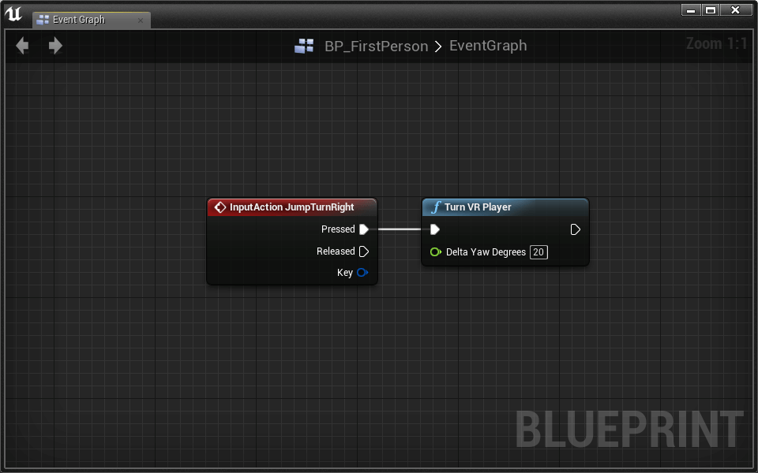
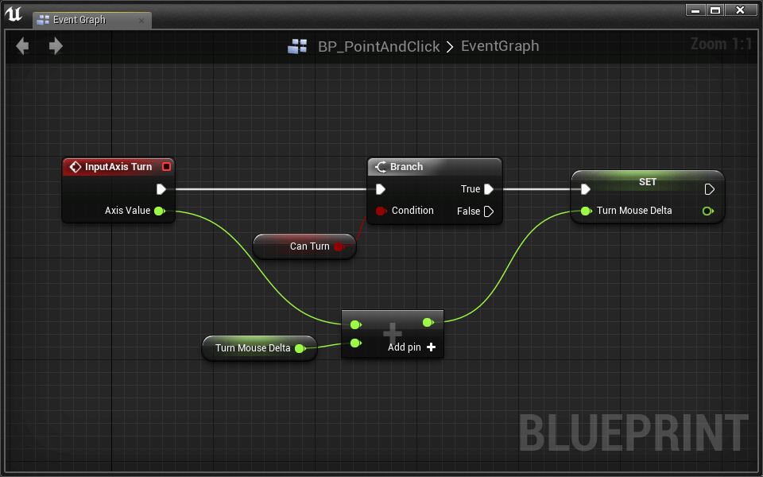

Lesson 4 - Locomotion and Perspective
Locomotion and Perspective
Download the Starter Project
Layout uses one Master Starter Project. If you’ve downloaded it recently, chances are you don’t need to re-download it.
This tutorial requires that you’ve downloaded the starter project as of 4/4/16:
- Click here to download the Layout Master starter project.
- Extract the zip folder.
- Open up the Layout_ToyBoxx.uproject and begin your adventure!
This lesson will introduce characters that move. At long last, you can navigate your levels!
Before we begin, it’s important to remember that movement in virtual reality can cause sickness if not done carefully. Comfort depends on the relationship between character locomotion and camera perspective. A good character-camera relationship can only come from diligent testing. Wear your headset!
Virtual reality requires us to think differently about movement and perspective. We believe our mechanics adequately mitigate simulation sickness, but there’s a great opportunity to innovate here. Don’t hesitate to create whatever characters that work best in your experiences.
This talk by Oculus’ Richard Yao is a great introduction to the perceptual system and HMDs.
The locomotion and perspective mechanics we’re going to work with in this lesson are:
- First Person
- 2.5D
- Point and Click
- Stationary Cameras
First Person
Let’s begin with simple first-person movement. This character will move and rotate in the world freely. The camera will be attached in the position of the character’s “head”.
We generally don’t recommend this kind of character movement because it invariably leads to some sickness. We do, however, appreciate that players find this kind of movement intuitive, so we’ll cover some best practices below.
Simulation sickness is often the result of conflict between the visual perception of movement and the non-visual perception of movement.
UE4 Character
We can create a new character with UE4’s Character class.
- Open the Lessons > Lesson4 > FirstPerson > FirstPerson level
- Create a new Character blueprint named BP_FirstPerson
Now we can set our new character as the default player class:
- Open FirstPersonGameMode
- Set DefaultPawnClass to BP_FirstPerson
- Open BP_FirstPerson
Since we chose Character as our parent class, this blueprint comes with a few inherited components:
- The inherited CharacterMovement component allows us to easily move our character after adding some inputs and basic movement code.
- The root CapsuleComponent acts as our player’s collision box. It’s already set to the recommended height of 176cm and width of 68cm.
- We can add a skeletal mesh to the Mesh component to define the character’s appearance and animations.
Let’s add a camera to the character via a scene component.
- Add a Scene component
- Name it CameraRoot
- Set location to [0, 0, 72]
- Add a Camera component
- Check the Use Pawn Control Rotation option
- This option turns the character to face the direction your HMD is facing.
- Uncheck the Lock to Hmd option
- This was introduced in 4.11 and does not play well with the Use Pawn Control Rotation option. We will use it later in the lesson.
- Attach it to CameraRoot by dragging the camera component on top of the camera root component.
- Set location to [0, 0, 0]
- Check the Use Pawn Control Rotation option
The UE4 VR Best Practices Guide recommends setting the eye height of a first person character to 160cm.
The first person character guidelines are written to replicate reality. UE4 recommends the player have an average human height, width, and camera (eye) location.
When the level is played, a BP_FirstPerson character will spawn.
Character Movement
We can capture user input for movement behavior with Axis and Action Mappings.
Action Mappings capture binary input, like key presses.
Axis Mappings capture continuous input, like mouse movement.
- Open Settings > Project Settings > Input
Our starter project includes some Axis Mappings for simple movement input:
Notice that Scale is set to -1.0 for inputs that move the character in the “opposite” direction (in this case backward or left).
There is an important difference between TurnRate/LookUpRate and Turn/LookUp. Gamepad and keyboard input is represented with axis values between -1 and 1. Mouse input is represented with values between ∞ and -∞. We’ll handle both types of input in our movement script.
- Open the BP_FirstPerson Event Graph
- Place an InputAxis MoveForward event
- Connect an Add Movement Input node
- MoveForward > Axis ValueAdd Movement Input > Scale Value
- Place a Get Actor Forward Vector node
- Get Actor Forward Vector > Return ValueAdd Movement Input > World Direction
- Place an InputAxis MoveRight event
- Connect an Add Movement Input node
- MoveRight > Axis ValueAdd Movement Input > Scale Value
- Place a Get Actor Right Vector node
- Get Actor Right Vector > Return ValueAdd Movement Input > World Direction
The character can now move forward, backward, left, and right using the W A S D keys, arrow keys, or gamepad left joystick.
UE4 recommends slow movement speed in VR. We can set a lower speed in the CharacterMovement component details panel.
- Set CharacterMovement > Max Walk Speed to 240
We can set other character movement options in the CharacterMovement details panel. We can also set these variables in code.
Let’s add code to allow the player to look up outside of VR.
We’ll start with mouse turning:
- Place an InputAxis Turn event
- Connect an Add Controller Yaw Input node
- Turn > Axis ValueAdd Controller Yaw Input > Val
- Place an InputAxis LookUp event
- Connect an Add Controller Pitch Input node
- LookUp > Axis ValueAdd Controller Pitch Input > Val
Notice that pitching up and down is automatically disabled for VR comfort.
Let’s enable rotation for the gamepad and keyboard:
- Create two new Float variables named BaseTurnRate and BaseLookUpRate
- Set both their default values to 45 (You have to compile before you can set their default values)
These variables will be used to set how quickly the gamepad and keyboard change the player’s view.
- Place an InputAxis TurnRate event
- Connect an Add Controller Yaw Input node
Now we use Axis Value to calculate the amount to turn the player.
- Place a Float * Float node
- Click Add Pin
- Connect TurnRate > Axis Value into one of the multiplication inputs.
- Connect our variable Base Turn Rate into one of the other multiplication inputs.
- Place a Get World Delta Seconds and connect it to the last multiplication input.
- Float * FloatAdd Controller Yaw Input > Val
We multiply rotation by Get World Delta Seconds so that speed does not change with frame rate.
- Place an InputAxis LookUpRate event
- Connect an Add Controller Pitch Input node
- Place a Float * Float node
- Click Add Pin
- Connect LookUpRate > Axis Value into one of the multiplication inputs.
- Connect our variable Base Look Up Rate into one of the other multiplication inputs.
- Place a Get World Delta Seconds and connect it to the last multiplication input.
- Float * FloatAdd Controller Pitch Input > Val
We now have full control of the character’s movement in and out of VR.
Watch out! You might experience some discomfort when rotating with the mouse or joystick. Some viewers find that mouse rotation is more comfortable than joystick rotation. Research suggests that the mouse provides a grounded reference that the joystick cannot provide. It’s believed that this reference helps the viewer better anticipate and conceptualize orientation. Neat!
VR Friendly Turning
If the visual perception of rotation causes pain, we can simply skip rotation with a jump turn. Sometimes called a skip, the jump turn allows the player to rotate in discrete radial increments.
- Open Settings > Project Settings > Input
- Review the Action Mappings:
- Open BP_FirstPerson
- Place an InputAction JumpTurnRight event
- Connect Layout’s Turn VR Player node
- Set Delta Yaw Degrees to 20

- Place an InputAction JumpTurnLeft event
- Connect Layout’s Turn VR Player node
- Set Delta Yaw Degrees to -20
Use Q and E or a gamepad’s shoulder buttons to jump left and right. It can take some getting used to, but many find the jump helps reduce simulation sickness.
Feel free to change the Turn VR Player > Delta Yaw Degrees amount to find a rotation that feels best.
Jumping
Jumping is generally not advisable for VR, but some experiences call for jumps. We’ve provided a jump action mapping with two inputs: Gamepad Face Button Bottom and Space Bar.
- Open BP_FirstPerson
- Place an InputAction Jump event
- Place a Jump node
- Connect Jump > PressedJump
- Place a Stop Jumping node
- Connect Jump > ReleasedStop Jumping
The Jump and Stop Jumping nodes come with the Character class and provide everything we need to make the player jump. Test it out! You can modify how your player jumps in the CharacterMovement component details panel.
Congratulations! You now have a fully functional First Person character that is able to walk and jump in first person.
Point and Click
As with rotation, locomotion can lead to simulation sickness. We can skip this movement with teleportation. Let’s create a mouse cursor that we can target as a teleport destination.
- Open the Lessons > Lesson4 > PointAndClick > PointAndClick level
- Create a new Character blueprint named BP_PointAndClick
- Open the new BP_PointAndClick blueprint
- Add a Scene component
- Name it CameraRoot
- Set location to [0, 0, 72]
- Add a Camera component
- Check the Use Pawn Control Rotation option
- Uncheck the Lock to Hmd option
- Attach it to CameraRoot by dragging the camera component on top of the camera root component.
- Open PointAndClickGameMode
- Set the Default Pawn Class to BP_PointAndClick
Adding a Mouse Cursor
- Open the new BP_PointAndClick blueprint
- Add Layout’s BPC Mouse Cursor component
The BPC_MouseCursor requires you to call its Update function whenever you want to move the mouse. Let’s hook up our mouse movements to this node.
The BPC_MouseCursor is a component that acts as a wrapper for Layout’s BP_MouseCursor. The BP_MouseCursor projects a 2D mouse position into 3D space and places a reticle at that location. If you’re curious how it is implemented, check out the BP_MouseCursor in Blueprints > Utility.
- Open the Event Graph
- Drag in a reference to the BPC_MouseCursor
- Pull a wire from the BPC_MouseCursor and place the Update node
- TickUpdate
The Update node has two inputs for the cursor’s Delta X and Delta Y. We’re going to use the mouse movement for these inputs, but they could easily be gamepad or key inputs as well.
- Place a Get Player Controller node
- Pull a wire and place a Get Input Mouse Delta
- Input Mouse Delta > Delta XUpdate > Delta X
- Input Mouse Delta > Delta YUpdate > Delta Y
Try it out! When you move your mouse, you’ll see a cursor in the world in 3D space. The cursor’s default behavior is to remain in its location until the mouse moves. At that point, if the cursor is off screen it will recenter itself.
You may decide that the cursor moves too quickly:
Challenge:
Change the Update > Delta X and Update > Delta Y inputs so that the cursor moves at 1/3 its current speed.
The Update function outputs a Trace Hit and a Trace Result as well. We will use these a bit later to decide if we can teleport to that location. Let’s first get teleporting to work!
Teleporting To The Cursor
A teleport action mapping is already set in the Action Mappings of your project with an input of Left Mouse Button.
- Open BP_PointAndClick’s Event Graph
- Place our new ActionInput Teleport event
We need the cursor’s location.
- Drag down a reference to our BPC_MouseCursor component
- Pull a wire and place a Get Cursor Location
- Place a Set Actor Location
- TeleportSet Actor Location
To avoid clipping through the ground, we need to set the character’s new location slightly above the location of the cursor. We can do this with some simple math.
- Place a Vector + Vector node
- Connect the Cursor’s Location to the first input
- Right click on the second input on Vector + Vector and select Split Struct Pin
By splitting the struct pin, we can add just to the Z without creating a new vector.
Let’s add the exact amount we need in the Z direction. That amount would be half the root CapsuleCompoent’s height.
- Place a Get Scaled Capsue Half Height (CapsuleComponent) node
- Connect this to the Vector + Vector > Z
- Connect Vector + VectorSet Actor Location > New Location
Test it out! You should be able to teleport wherever you click. This isn’t always a good thing. We should only teleport where the player can stand.
- Create a new Boolean variable named Can Teleport
We’re going to set this variable depending on whether or not the cursor is in a location that we can teleport to. Go back to your BPC Mouse Cursor > Update node.
- Pull a wire from Update > Trace Hit and place an Is Walkable (CharacterMovement) node.
- Set Can Teleport equal to the output of Is Walkable (CharacterMovement)
Challenge:
Use the new Can Teleport variable and a Branch to only teleport when able.
As a player, it is hard to know when you can and can’t teleport. Let’s change the cursor’s color depending on whether or not we can teleport to that location:
Challenge:
To set the cursor’s color:
- Drag down a reference to the BPC_MouseCursor
- Pull a wire and place a Set Cursor Color node
Use this knowledge to set the cursor’s color to indicate whether or not the player can teleport.
Sweet! This is a cool way to get around.
Mouse Jump Turns
Our character can’t turn without a VR headset. Let’s add a new mechanism for turning your player.
The mouse jump turn is the jump turn with mouse input.
To execute a mouse jump turn, the player will press Right Mouse Button and move the mouse left or right. After moving the mouse some set amount, the character will do a jump turn.
- Place a Right Mouse Button event
- Create a new Boolean variable named Can Turn
- Set Can Turn to true when Right Mouse Button > Pressed
- Set Can Turn to false when Right Mouse Button > Released
- Place a InputAxis Turn event
- Connect a Branch conditioned on Can Turn
Here we need to think about how this will work. The idea is that once we move the mouse enough, we will make a Jump Turn. In order to keep track how much our mouse has moved since we pressed the Right Mouse Button, we need to create a new variable.
- Create a new Float variable named Turn Mouse Delta
- Add Turn > Axis Value to Turn Mouse Delta if the player Can Turn

Challenge:
If Turn Mouse Delta becomes greater than 5, use Turn VR Player to turn the player right. Similarly, if Turn Mouse Delta becomes less than -5, use Turn VR Player to turn the player left.
Don’t forget to set Turn Mouse Delta back to 0 after turning the player.
Test it to see that it works!
Great! One thing you may notice when you test is that the cursor acts strangely when we turn with the mouse. Let’s only Update the cursor when we’re not turning.
- Insert a Branch between TickUpdate
- Condition the Branch on Can Turn
- Branch > FalseUpdate
Perfect! Now we can turn and teleport with the mouse. Play around in the world to get a feel for this movement scheme.
2.5D Gameplay
We’ve created two characters in the first person perspective, but this isn’t the only character-camera relationship that works well in VR. Let’s create a new character from the third person perspective. The character will move in what’s called a 2.5D environment.
This video demonstrates 2.5D in action:
The camera is constrained to a plane as the character moves. We’ve designed a level to take advantage of this constraint.
- Open the Lessons > Lesson4 > 25D > 25D level
- Create a new Character blueprint named BP_25DPlayer
- Open 25DGameMode
- Set the Default Pawn Class to BP_25DPlayer
- Open the new BP_25DPlayer blueprint
Since we’ll be in Third Person, we can’t use an invisible character.
- Select the Mesh (Inherited) component
- Set Skeletal Mesh to SK_Mannequin
- Set Anim Blueprint Generated Class to ThirdPerson_AnimBP
- Set Location to [0, 0, -88]
- Set Rotation to [0, 0, -90]
With Skeletal Mesh and associated Animation Blueprint, our player has become a running humanoid.
Possess An External Camera
How a camera behaves in the third person perspective is critical to comfortable VR. Let’s create a new camera actor that follows the character:
- Create a new actor blueprint named BP_25DCamera
- Open the blueprint and add a Camera component
Until now, we haven’t needed to enable the Lock to Hmd setting of the camera component. Because the player does not “own” the camera, Lock to Hmd should be enabled to ensure that BP_25DCamera tracks head movement.
In order to possess the external camera, we have to spawn it in the world, then explicitly make it our main camera.
- Open BP_25DPlayer
First, lets designate a place to spawn our camera.
- Add a Scene Component
- Name it CameraSpawnPoint
- Set Location to [0, 600, 150]
We need to make sure our Camera spawn facing the right direction. A great way to do this is with an Arrow Component.
- Add an Arrow Component
- Attach it the the CameraSpawnPoint by dragging and dropping it on top
- Set Location to [0, 0, 0]
- Set Arrow Color to white (this is to prevent it from blending in with the red translation handle)
Now we have an arrow that shows the forward direction of the component it is attached to.
The arrow component is usually only used for development so it will not show up in the game unless you explicitly tell it to.
It looks like we have to rotate our CameraSpawnPoint to point towards our character.
- Set CameraSpawnPoint rotation to [0, 0, -90]
Now that our CameraSpawnPoint is set up, let’s use its transform to properly spawn our BP_25DCamera.
- Open the BP_25DPlayer Event Graph
Challenge:
When the game begins, spawn the BP_25DCamera using the CameraSpawnPoint’s world transform.
We’ve spawned the camera with the correct transform, now let’s possess the camera! This can be done using the Set View Target With Blend node:
- Place a Get Player Controller node
- Pull out a wire and place a Set View Target With Blend
- SpawnActor BP_25DCameraSet View Target With Blend
- SpawnActor BP_25DCamera > Return ValueNew View Target
The Set View Target with Blend node takes any actor as its New View Target and possesses its camera. We’ve now set our camera to the BP_25DCamera actor that we spawned.
- Go ahead and press Play to test it out. Make sure to test it monoscopically and in VR.
Moving In 2.5D
We’ve got a static 2.5D camera set up. Before we program our camera to follow the player, lets program our player to move!
- Place an InputAxis MoveRight event
- Connect an Add Movement Input node
- MoveRight > Axis ValueAdd Movement Input > Scale Value
For the First Person perspective we used the character’s right vector as the World Direction, but that’s not the case here. Instead, we want to move the character along the Y axis.
- Set World Direction to [0, 1, 0]
Great, now we can move left and right!
Challenge:
Set up the InputAxis MoveForward event to move the character along the X axis.
Test it out. Everything works, but the character doesn’t run in the direction it moves!
Moonwalking is cool, but we should probably fix this:
- Select the CharacterMovement component
- Check the Orient Rotation to Movement box
In order to get the above setting to not be overridden:
- Select Class Defaults in the toolbar
- In the details panel, uncheck Use Controller Rotation Yaw
Now your player should run around the way you expect.
Challenge:
For fun, add the ability for your character to Jump. You already did this for the First Person perspective.
Following The Player
Now that we can move, it’s time to follow the player with our BP_25DCamera.
For now, we’re going to script some very basic following behavior. Essentially, we’re going to constrain our camera to the X Axis while following the player’s Y and Z location. It will look like this when we’re done:
Eventually, we’ll be updating the BP_25DCamera’s location on Tick. We can’t do this until we know where we should position our camera. The math for our camera position looks like:
The Camera X Location is the camera’s original X location in the world. We need this to constrain our camera to the X Axis.
The Camera Offset is the camera’s relative offset from the player.
Challenge:
Take your time to think about the math, then make it happen! Your challenge is to write the code to get the camera to follow the player in a 2.5D fasion.
Warning: this challenge is not trivial. Give it some time before you decide you can’t do it.
You’ll need to store two variables when the camera is spawned on BeginPlay: Camera X Location and Camera Offset
To calculate the Camera Offset:
On Tick you’ll have to use the player’s location and your two variables to set the BP_25DCamera’s Location using SetActorLocation
Hint: You need to use Split Struct on your vector pins and/or a Break Vector node to isolate X, Y, and Z values.

Awesome! Our 2.5D perspective is complete. It should work like this:
Using A Spring Arm
Our camera makes no attempt to smooth movement. With the Spring Arm component, we can to dampen sudden changes in location.
- Open BP_25DCamera
- Add a Spring Arm component
A Spring Arm is like a flexible camera boom. As the boom moves, an attached camera will slowly accelerate to follow.
- Attach the Camera component to the Spring Arm
The camera will automatically attach itself to the “end” of the arm.
- Set the Spring Arm’s Target Arm Length to 50
We set the flexibility of the Spring Arm with the Camera Lag setting.
- Check the Spring Arm’s Enable Camera Lag option
You can adjust the amount of camera lag using the Camera Lag Speed option. Tweak your Spring Arm settings until you’re comfortable!
Shrinking The World
Many third person VR experiences take place in small environments. When the world is small, players move greater distances with positional tracking. The effect this has on immersion is better experienced than explained.
- Open the Settings menu from the Level Editor toolbar
- Select World Settings
- In the VR category of the details panel, set World to Meters to 500
With one setting, we’ve scaled environment elements to 1/5 their normal size. We’ve also effectively increased the virtual interpupilary distance. Commonly referred to as IPD, interpupulary distance is the distance between a person’s eyes. As this distance increases, viewed objects appear smaller.
Resetting The HMD
It’s useful to reset a player’s orientation and location relative to the virtual environment.
- Open BP_25DPlayer
We’ve added an Axis Mapping called ResetHMD that fires on Tab and Gamepad Special Left.
- Place a ResetHMD event
- Place a Reset Orientation and Position node
- ResetHMD > PressedReset Orientation and Position
Beautiful! Now whenever you press Tab or Gamepad Special Left, your HMD’s origin will be reset.
Stationary Cameras
We can disable player movement entirely with stationary cameras. As a character moves through the level, we can automatically switch the player between perspectives for the best point of view.
Watch this video to get a better idea of this character-camera relationship:
We’ve colored the camera trigger boxes pink in this video, but they’ll be invisible in your game.
- Open the Lessons > Lesson4 > StationaryCameras > StationaryCameras level
This type of gameplay is similar to 2.5D in that we’ll be using external cameras rather than the player’s camera. Instead of using one camera, we’ll place several throughout the level, then switch between them. To start, let’s create a camera actor that we can place in our world:
- Create a new actor blueprint named BP_VRCamera
- Add a Camera component
That’s it for now!
- Place a BP_VRCamera somewhere in the world facing the PlayerStart. We need it facing player start so we can see our character when we play the game.
When you place your BP_VRCamera, make sure to not rotate its pitch. We’ll demo why at the end of this section.
If you press play now, you won’t get good results. The problem is that we haven’t possessed our new camera.
- Open the BP_SwitchCameraCharacter which has been premade for you with basic movement and jumping mechanics.
- Place a new custom event named SwitchCamera
- Add a BP_VRCamera input named NewCamera
- Place a Get Player Controller node
- Pull a wire and place a Set View Target with Blend
- SwitchCameraSet View Target with Blend
- New CameraNew View Target

Remember, the Set View Target with Blend is what sets our new camera perspective. It takes any actor as its New View Target and possesses its camera.
The last thing we need to do is fire our new SwitchCamera event from the level blueprint.
- Open the Level Blueprint
- Place a Get Player Character node
- Connect it to a Cast to BP_SwitchCameraCharacter node
- BeginPlayCast to BP_SwitchCameraCharacter
- Pull a wire from As BP_SwitchCameraCharacter and place a SwitchCamera node
- Connect Cast to…SwitchCamera
- Get a reference to the BP_VRCamera you placed earlier. Do this by selecting the BP_VRCamera in the world and then right clicking in the Level Blueprint and select Create a Reference to BP_VRCamera.
- Connect BP_VRCameraSwitchCamera > NewCamera
We mentioned that you should never pitch cameras in VR. Don’t believe us? Go ahead and try it for yourself!
- Set the pitch rotation of BP_VRCamera to something other than 0 and test in VR.
- Try not to get sick
- Undo! Undo!
Monoscopic Camera Movement
We need to enable automatic camera movement when the player is not in VR.
- Open BP_VRCamera
- Place a Is Head Mounted Display Enabled node
- Place a Branch conditioned on Is Head Mounted Display Enabled
- TickBranch
The strategy is simple: every frame, we update the camera’s rotation to point toward the player.
Challenge:
Rotate BP_VRCamera to follow the player character every frame. Only rotate if the HMD is not enabled.
To set BP_VRCamera’s rotation, use the Set Actor Rotation node.
To calculate the proper rotation for the camera, use the Find Look at Rotation node. You’ll want the rotation from BP_VRCamera to the player.
To get the BP_VRCamera’s location, use the Get Actor Location node.
To get the player character’s location, use Get Player PawnGet Actor Location
Test without the HMD. The camera should follow the player character wherever it goes.
Thanks to Lock to Hmd, our camera automatically works in VR. This means we don’t have to execute anything on false.
Player Movement
We now have a possess-able camera actor that works both in and out of VR. One thing you may notice, controlling the character feels strange. Let’s see what we can do to make it feel more natural.
- Open BP_SwitchCameraCharacter
Currently, the movement code is using hard coded World Direction values. Let’s see how it feels to use the forward and right vectors of our current camera. To start, we have to store our current camera.
- Create a new BP_VRCamera variable named CurrentCamera
- At the end of the SwitchCamera event, set CurrentCamera equal to SwitchCamera > New Camera
We need to get the camera’s forward and right vectors as input for the World Directions in our movement code.
- Get a reference to the CurrentCamera variable
- Pull a wire and place a Get Actor Forward Vector
- Get Actor Forward Vector > Return ValueAdd Movement Input > World Direction
- Do the same for the Right Vector
Test it out! Moving around should feel better.
There is one difficult-to-spot bug in this code. If you look down while wearing your HMD, your player will run slower. This is because your camera’s forward vector starts pointing downward, which makes your player character try to run downwards too.
To fix this, we need to ignore the Pitch and Roll of the camera’s rotation. We only want the Forward and Right Vectors from the camera’s Yaw rotation.
- Delete Get Actor Forward Vector and Get Actor Right Vector
- Pull a wire from CurrentCamera and place a Get Actor Rotation node.
- Right click the output and select Split Struct Pin
- Place a Make Rotator node
- Connect Get Actor Rotation > Return Value Z (Yaw)Make Rotator > Z (Yaw)
We’ve now isolated the Yaw rotation of CurrentCamera.
- Pull a wire from Make Rotator > Return Value and place a Get Forward Vector node.
- Do the same for a Get Right Vector node
- Connect the Forward and Right Vectors into the correct Add Movement Input nodes.
Switching Cameras
Let’s add new cameras to the level and switch between them.
- Create a new actor blueprint named BP_SwitchCameraTrigger
- Add a Box Collision component
- Right click the Box Collision component and select Add Event > Add OnComponentBeginOverlap
This trigger will work by telling BP_SwitchCameraCharacter to SwitchCamera when the player overlaps the trigger. This means the trigger needs to store a reference to the new camera actor.
- Create a new BP_VRCamera > Reference variable named TargetCamera
- Check the Editable box
- Compile
By making this variable Editable (more commonly known as Public), we can change its value from within the editor.
- Place a second BP_VRCamera somewhere in your world.
- Place a BP_SwitchCameraTrigger where you think appropriate. When your player character runs into it, imagine switching to your new camera view.
- Scale the trigger so it’s impossible to miss
- In the details panel, select the proper Target Camera from the drop down. You want to choose the camera that your player’s view will change to when overlapping the trigger box.
Time to add the code to switch cameras in the BP_SwitchCameraTrigger. We’ll do something very similar to what we did in the Level Blueprint
Challenge:
When the BP_SwitchCameraTrigger is overlapped, we want to check if it was the player that overlapped, then call SwitchCamera if it was. Switch the camera to the trigger’s Target Camera.
Use Cast to BP_SwitchCameraCharacter to check if OnComponentBeginOverlap (Box) > Other Actor is actually the player character.
Switching cameras is now fully functional. It’s up to you to place more BP_VRCameras and their associated BP_SwitchCameraTriggers throughout the level.
Fading Between Cameras
Fading between cameras can improve comfort. We’ll use a timeline and Set Manual Camera Fade.
- Open BP_SwitchCameraCharacter
We’ll make our fade wrap around the SwitchCamera event. When the event fires, we’ll fade the scene out, switch cameras, then fade back in.
This means we have to insert our fade to black code in between SwitchCameraSet View Target with Blend:
- Create a new Timeline that curves a float track from 0 to 1 over 1 second
- To create the timeline, right-click and search “Add Timeline”
- Name the timeline FadeToBlack
- If you need a refresher on how to edit a timeline, it was discussed in the Pop-Up Target section of Lesson 3
- SwitchCameraFadeToBlack > Play from Start
Now we need to use our timeline’s output to fade the scene to black.
- Place a Get Player Camera Manager node
- Pull out a wire and place a Set Manual Camera Fade node
- FadeToBlack > UpdateSet Manual Camera Fade
- FadeToBlack > DataSet Manual Camera Fade > In Fade Amount
- FadeToBlack > FinishedSet View Target with Blend
We now fade to black, then switch the camera. All we have to do is fade back in!
Challenge:
Using the same techniques we used to fade the camera to black, write some code to fade the camera back in after switching to the new view target.
Our camera transition is functional, but there’s a bug hidden here.
First, if SwitchCamera attempts to switch us to the same camera, we’ll fade in/out for no reason.
Challenge:
Insert a Branch in front of everything that checks whether or not CurrentCamera is equal to SwitchCamera > New Camera using ==. If it is, don’t do anything.
Second, when we first start the game, we fade out from some unknown camera (it is in fact the player’s default camera), then fade back in to the one we want to start on. Let’s skip the undesired fade out from unknown camera at the beginning.
The best way to skip the unwanted behavior is to check if the have a CurrentCamera. At the very start of the game, we don’t have a CurrentCamera and can thus choose to skip the fade to black and jump straight to switching cameras and fading in.
We can check if we have a CurrentCamera using the Is Valid? node.
- Pull a wire from Branch > False and place a Is Valid? node
- Connect a reference to CurrentCamera to Is Valid > Input Object.
If the CurrentCamera Is Valid, we should continue on as normal. Otherwise, we should skip the fading part and jump right to Set View Target with Blend.
- Is Valid > Is ValidFadeToBlack
- Is Valid > Is Not ValidSet View Target with Blend
Go ahead and press that Play button! The fading should work perfectly.
Effective use of this character-camera relationship requires careful level design and good camera/trigger placement. Be thoughtful!
A Note On Controls
You may have noticed that the controls aren’t entirely intuitive, and definitely don’t feel great when you switch cameras. There are a number of ways to improve the control scheme of this perspective, and with some tweaking, you can have it working exactly as you want. We’ll leave the implementation up to you.
Switching Levels
You now have 4 great locomotion/perspective demos. We’re going to take this as an opportunity to learn about loading new levels. By the end, you’ll be able to demo each map in one playthrough. To do this, we’ll put a “portal” at the end of each map that links each map together.
BP_Portal
We’ve set up a blueprint in Lessons > Lesson4 called BP_Portal. It is currently just some static meshes and a public variable. Let’s make this portal load the next level for us when our character gets close.
- Open BP_Portal in Lessons > Lesson4
We first need to add a collision box that will fire an overlap event when our player gets close.
- Add a Box Collision component
- Set Location to [0, 50, 100]
- Set Box Extent to [100, 100, 100]
This Box Collision can be used to fire an overlap event whenever our player collides with it. This is how we’ll know when to switch levels.
Let’s add a collision event specific to our Box Collision component:
- Right click the Box component
- Select Add Event > Add OnComponentBeginOverlap
A new event was added to our event graph! This event will only fire when the Box component is collided with.
Using collision components like our Box Collision is an extremely powerful scripting pattern in UE4. You’ll find that you use it all the time to trigger events and behaviors.
When the Box is collided with, we want to open the new level. To do that, we use the Open Level node.
- OnComponentBeginOverlap (Box)Open Level
The Open Level node has a Level Name input. Here we’re going to use the BP_Portal’s public variable LevelName as its imput. Now we can reuse the BP_Portal, no matter what level we want to load.
- Get a reference to LevelName
- LevelNameOpen Level > Level Name
Now let’s test out our portal:
- Open the FirstPerson map
- Place the portal at the end of the level
- Set the portal’s Level Name to PointAndClick in the Details panel
Press Play and test it out!
Nice! Now you can add the portal to PointAndClick and 25D. Just make sure each portal points to the next level.
One thing you may notice is that when we switch levels, the engine tends to lag as it loads up the new files. A laggy HMD is a great way to make your player nauseas. To fix this, we should fade out, then back in, just like we did with the Stationary Cameras.
Fading Between Levels
In Stationary Cameras, we faded our camera out using a Timeline and the Set Manual Camera Fade node. Rather than using a Timeline, let’s use UE4’s built in Start Camera Fade node.
- Open BP_Portal
Let’s add the code to fade out before opening the new level:
- Place a Get Player Camera Manager node
- Pull out a wire and place the Start Camera Fade node
- Set From Alpha to 0
- Set To Alpha to 1
- Set Duration to 1
- Check Hold When Finished
- OnComponentBeginOverlap (Box)Start Camera Fade
The Start Camera Fade node does not block until it’s finished. For this reason, we have to use a Delay node to wait until the fade finishes, then switch levels using Open Level
Challenge:
Use a Delay node to wait for the camera fade to finish. Then switch levels using Open Level.
Marvelous! Now when we switch levels the current world fades out before switching to the new map. One problem, the new level needs to fade in!
Challenge:
Using the Level Blueprint of each level, fade the camera in on Begin Play.
There it is! All your levels should now link up and seamlessly fade between each other once you reach the portal at the end.
Conclusion
We’ve created four characters with unique character-camera relationships. Some of these characters are more VR-friendly than others, but each has its advantages and disadvantages. VR is a vast and largely unexplored frontier. Our guidelines are only suggestions. This is your opportunity to experiment and innovate.
To read more on suggested VR practices, check out the Oculus Documentation.
In UE4, you now have the skills to:
- Create a character that moves using the CharacterMovement component
- Use your mouse in game to interact with a 3D world
- Possess external cameras for Third Person experiences
- Experiment with different types of locomotion and perspective
- Use collision components to define overlap triggers
- Change levels
- Fade the camera in and out
Lesson 4 - From Beginning To End
In this assignment, you’ll create an experience in which the player travels from a Start point to an End point. Extend any of our VR-friendly characters, or create an entirely new locomotion/perspective scheme, to allow the player to navigate through the world to some specified destination.
The player’s adventure should be interactive. The player must communicate with actors to move to new parts of the level. We’ll leave interaction implementation up to you, but tracing and overlap collisions provide more than enough functionality.
Starting Point
Create a Start point with a Player Start actor.
Ending Point
Create an End point with an “end game” blueprint similar to our BP_Portal.
- Using an overlap collision event, trigger an end sequence when the player reaches the end
- Upon completion of the end sequence, restart the level with an Open Level node. (restart the level by re-opening the current level)
- Make sure to fade the camera out before reloading the level!
Resetting the character
Traveling across the level may not be easy. If a player gets stuck, we should allow them to “respawn” without restarting the level.
- Create a new Action Mapping that resets the character to Player Start on input
- If the player can “fall off” the map, include a collision mesh blueprint that resets the player on collision.
- Consider incorporating “checkpoints” that allow the player to save their progress